A onda sobe
O doce aparece no feed, todo mundo quer provar e quase ninguém da sua cidade tem um produto padronizado para entregar. A procura chega antes da oferta.
Um guia visual para organizar preparo, acabamento, custo e encomendas sem depender de 100 receitas soltas.
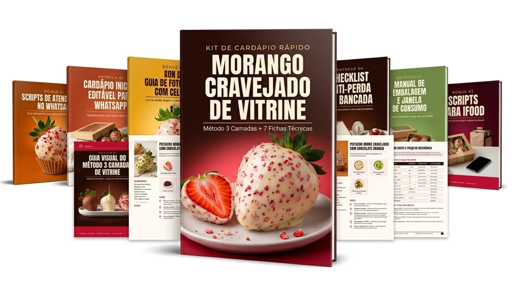
Guia Visual + 7 Receitas Técnicas + Ficha de Custo
Você viu acontecer com o morango do amor: em poucas semanas o doce estava em todo feed, em toda vitrine — e depois a atenção seguiu em frente. Com o morango cravejado o ciclo é o mesmo. Não é quem inventa a tendência que aproveita: é quem está pronta quando ela chega na sua cidade.
O doce aparece no feed, todo mundo quer provar e quase ninguém da sua cidade tem um produto padronizado para entregar. A procura chega antes da oferta.
Quem já tem cardápio pronto, preço fechado e embalagem definida pega a encomenda no mesmo dia. Quem ainda está testando receita responde “me chama semana que vem”.
A atenção migra para o próximo doce viral. Sobra quem construiu clientela durante o pico — e some quem chegou quando o assunto já tinha esfriado.
A diferença entre pegar a onda e assistir ela passar costuma ser de dias, não de meses. E o que separa as duas coisas não é talento: é ter o cardápio, o custo e a embalagem resolvidos antes do cliente perguntar o preço.
QUERO ME POSICIONAR AGORA Monte seu cardápio hoje — a partir de R$ 17,00Aqui você não vai encontrar enrolação ou teorias desnecessárias. O kit foi desenhado para quem está com a mão na massa e precisa de clareza imediata em cada etapa da bancada:
Entenda uma sequência organizada de preparação para testar acabamento, secagem e orientação de consumo na sua bancada.
Fórmulas de desenvolvimento com ingredientes, gramaturas sugeridas, modo de preparo, acabamento e teste de bancada.
Estrutura simples para calcular seus custos reais de fruta, brigadeiro e embalagem, definindo seu preço sem chute.
Modelo pronto e editável para você personalizar com sua marca, seus sabores e as regras de pedido no WhatsApp.
O roteiro de segurança para lavar, secar e manipular o morango sem comprometer a integridade e a durabilidade.
Recomendações de caixas, forminhas e orientações de entrega para o produto chegar intacto e valorizado ao cliente.
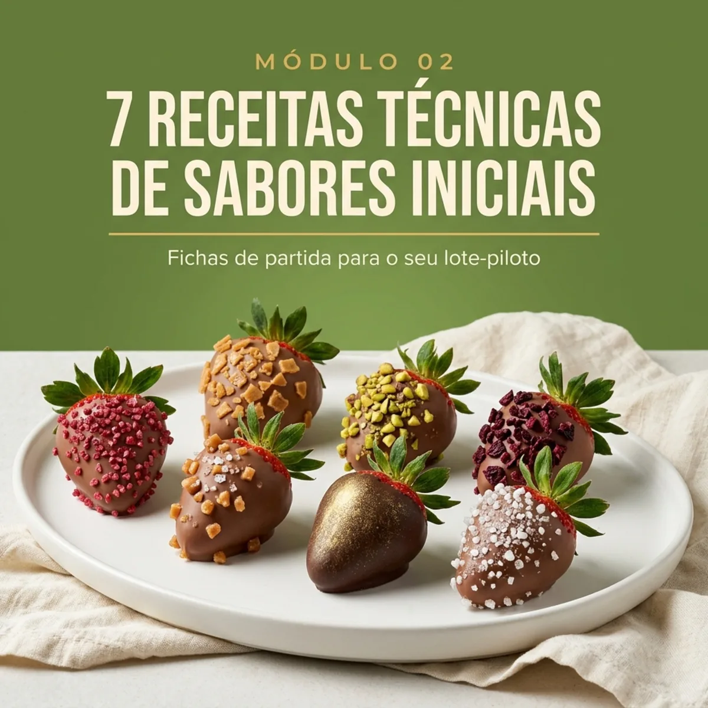
Passo a passo com gramaturas exatas e ponto de cobertura
Gramaturas, modo de preparo e finalização de bancada.
Roteiro de pedidos prontos para WhatsApp e Instagram
Textos prontos para enviar a clientes e organizar entregas.
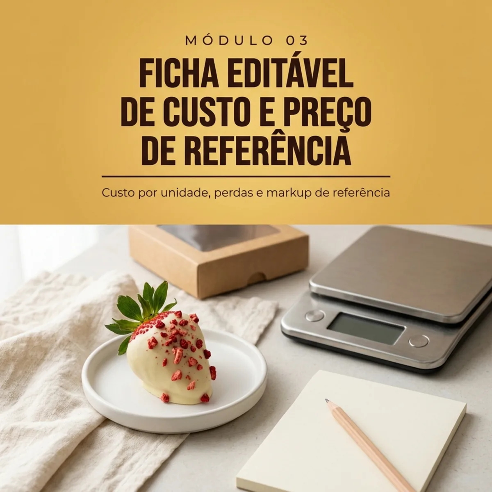
Cálculo de fruta, chocolate e margem real por unidade
Definição de preço sem chute para proteger seu lucro.
O morango cravejado ganhou atenção como variação visual do morango do amor, mas quem tenta fazer sem método costuma bater de frente com três frustrações clássicas:
Se o morango for higienizado ou manuseado de forma errada, ele começa a "suar" por dentro do brigadeiro e vaza líquido em poucas horas, estragando completamente a apresentação.
Fazer uma camada grossa de caramelo quebra o dente de quem come. Já tentar colar pedaços sem a temperatura certa faz o acabamento cair todinho no prato.
Morango e chocolate nobre são insumos de valor. Vender sem calcular grama por grama significa correr o risco de trabalhar o dia todo e pagar para produzir.
Você não precisa de uma enciclopédia com 100 receitas mirabolantes que só geram confusão. Você precisa de um método organizado de montagem e de um cardápio enxuto para testar e precificar com os seus custos reais.
A solução organizada para transformar técnica em produto vendável e eliminar as principais causas de erro na cozinha:
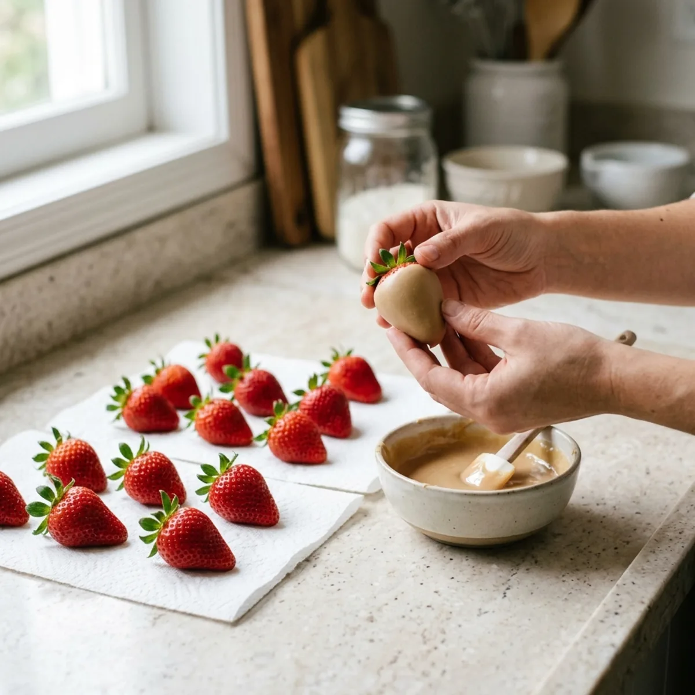
Higienização sem perfuração e blindagem com brigadeiro
O segredo da durabilidade começa na escolha do morango e na higienização por imersão rápida, preservando o talo verde para evitar entrada de água. A fruta passa por secagem completa e recebe a primeira camada de brigadeiro no ponto correto de enrolar, formando uma blindagem contra umidade.
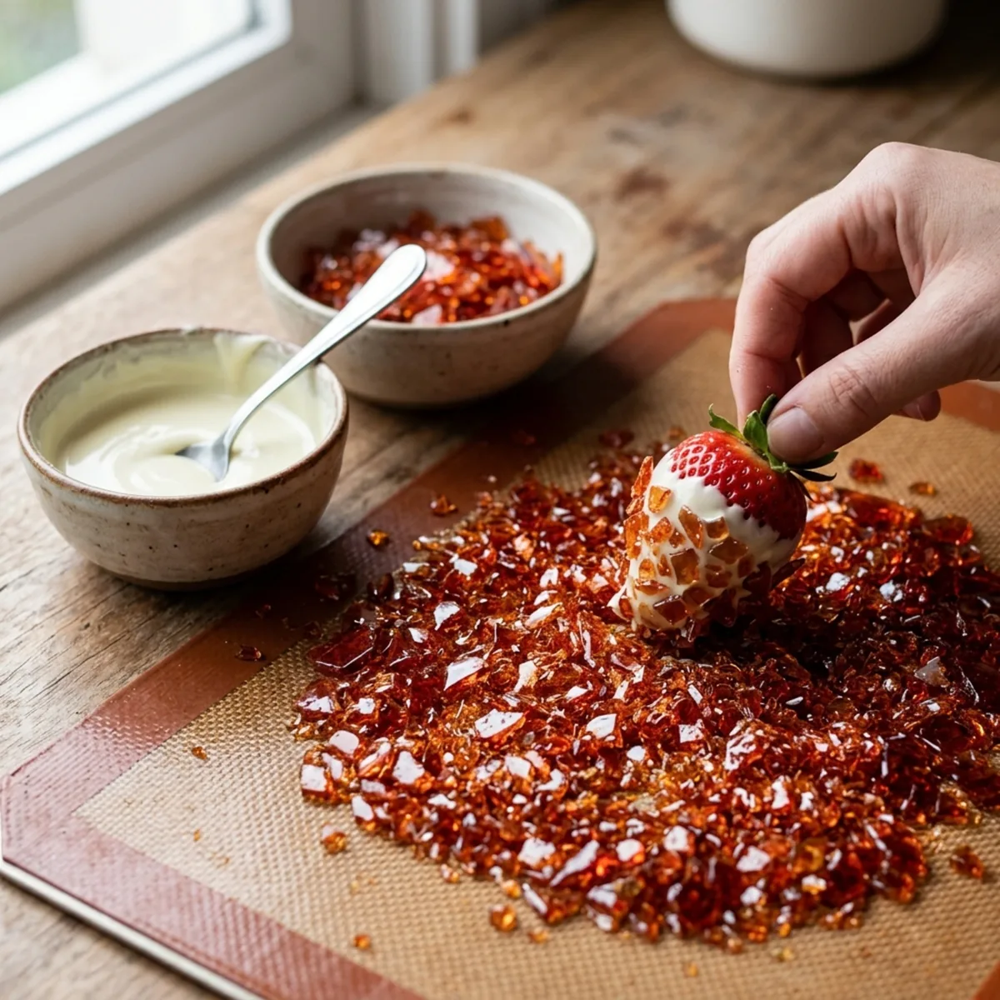
Calda em ponto de bala dura e pedriscos translúcidos
Em vez de banhar a fruta em uma casca inteira e espessa de açúcar que machuca a boca, você prepara uma calda crocante em ponto de bala dura, quebra em pedregulhos finos e cravejados, e aplica diretamente sobre o banho de chocolate branco ainda fluido. O resultado é contraste perfeito: cremoso por dentro, crocante por fora.
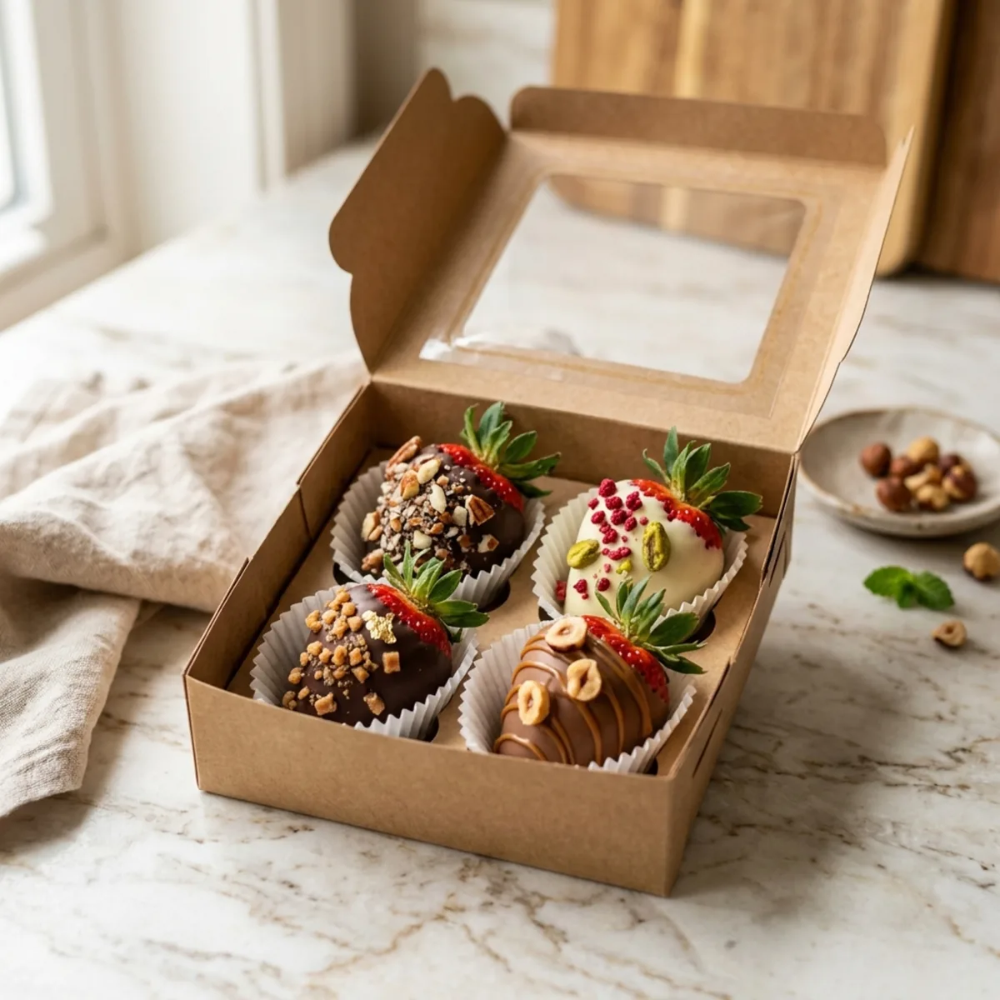
Cardápio enxuto, precificação e produção sob encomenda
Fruta fresca exige operação inteligente. Você aprende a montar uma rotina sob encomenda prévia, comprando morangos na quantidade exata, acondicionando em embalagens com visor e instruindo seu cliente sobre a janela ideal de consumo.
Transparência total para você ter certeza de que este kit é exatamente o que você precisa agora:
Cada receita traz rendimento, dificuldade, ingredientes, modo de preparo e finalização — tudo pronto para você produzir e colocar no cardápio.
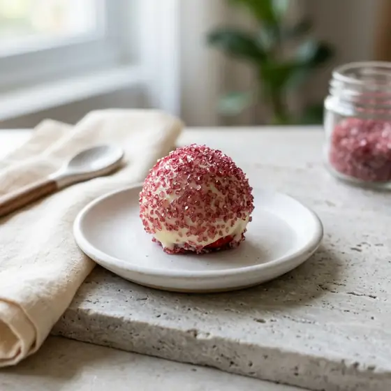
12 a 15 unidades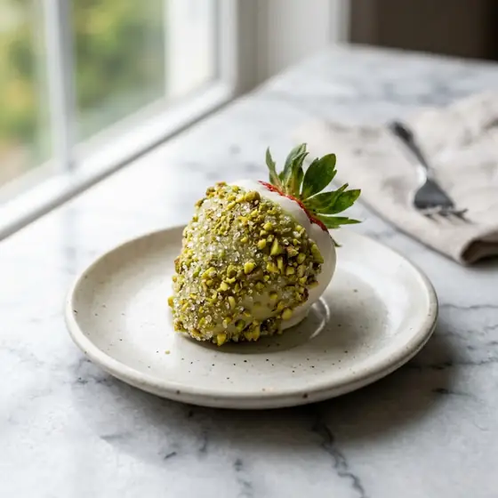
12 a 14 unidades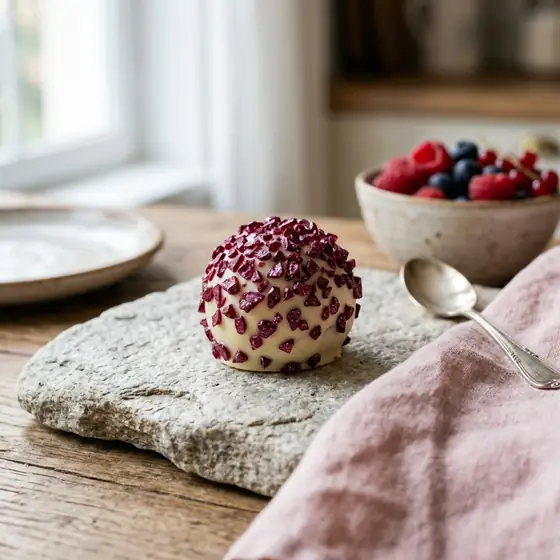
12 a 14 unidades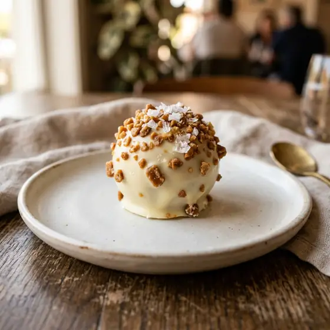
12 a 15 unidades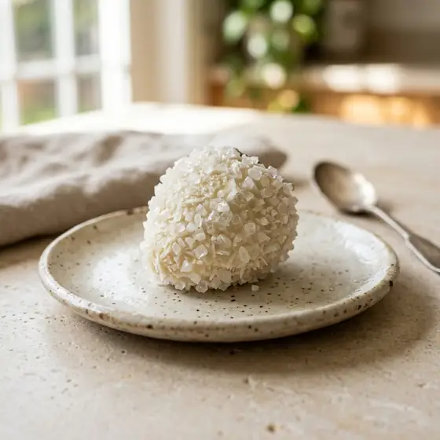
12 a 14 unidadesO PDF principal já resolve o cardápio inicial. O plano completo acrescenta os materiais de encomenda, embalagem e atendimento em arquivos separados.
Comece pelo PDF principal ou leve o pacote completo com as entregas de encomenda e os 3 bônus.
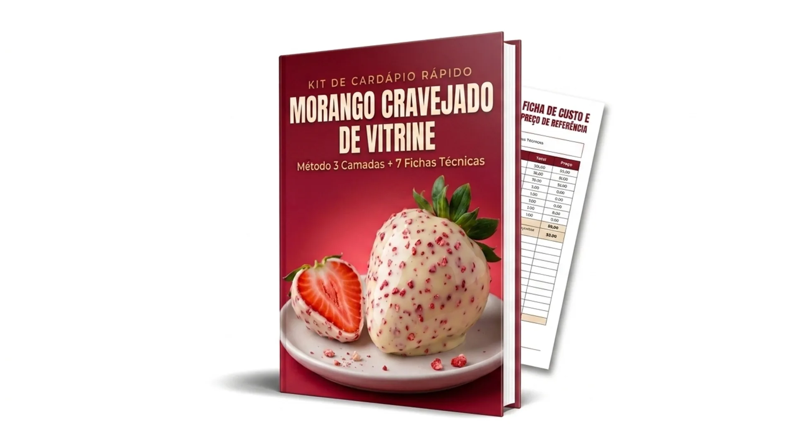
PDF Principal — Guia Visual + 7 Receitas + Ficha de Custo
ATENÇÃO: temos uma oferta ainda mais vantajosa para você. Veja o plano completo ao lado.
PDF Principal + 3 Entregas + 3 Bônus
Todas as entregas e bônus liberados de uma vez, sem seleção extra.
Garanta a opção que faz mais sentido para o seu momento e finalize a compra com segurança.
Após a confirmação do pagamento, você recebe os PDFs do kit em formato digital.
Monte seu cardápio com os 7 sabores, feche o preço na ficha de custo e abra as encomendas.
Nós confiamos na qualidade e na clareza prática deste material. Por isso, você tem 15 dias corridos a partir da aprovação da compra para acessar o kit, ler os manuais, olhar as fichas e testar o método na sua bancada.
Se por qualquer motivo você achar que o conteúdo não te ajudou a organizar seu cardápio, basta solicitar o reembolso diretamente na plataforma de pagamento dentro do prazo de 15 dias para receber 100% do seu dinheiro de volta. Simples e sem letras miúdas.
Esclareça suas dúvidas sobre formato, acesso, ferramentas e aplicação prática:
Assim que o seu pagamento for confirmado pela plataforma, os dados de acesso e o link para download de todos os arquivos serão enviados automaticamente para o seu WhatsApp e e-mail cadastrados. Pagamentos via Pix e cartão têm liberação imediata.
O produto principal é um kit digital completo em formato de Guias Visuais, Fichas Técnicas em PDF de alta resolução e Planilhas/Modelos editáveis para você consultar direto no celular, tablet ou imprimir para deixar na bancada da sua cozinha.
Não. Todo o método foi adaptado para a realidade da cozinha caseira. Você só vai precisar de panelas comuns de fundo grosso, espátula de silicone, papel-toalha de boa absorção, fogão tradicional e um termômetro culinário (ou seguir nosso teste do copo d'água explicado no guia).
Por se tratar de um doce que utiliza fruta fresca e íntegra, a recomendação técnica do método é trabalhar com produção e consumo no mesmo dia ou em até 24 horas, mantendo em local fresco e arejado. O kit ensina exatamente como estruturar sua produção sob encomenda para não ter sobras.
Sim. A estrutura de custos é intuitiva e pode ser aberta em qualquer aplicativo de planilhas gratuito no celular ou computador, além de poder ser preenchida à mão na folha de impressão.
Você conta com as instruções detalhadas em checklist para cada etapa do preparo e nosso canal de suporte por e-mail indicado na área de membros para qualquer dúvida de acesso aos materiais.
Chega de perder tempo catando receitas soltas e correndo o risco de perder frutas caras. Tenha um passo a passo estruturado, seguro e testado na sua bancada.
ESCOLHER MEU PLANO AGORA A partir de R$ 17,00 • Acesso imediato • Garantia de 15 dias